TECHNICAL PROPOSAL / 閱讀版
把出行的體驗，
從發現地方、前往與抵達，到明信片收藏、城市足跡與再次出發。
發現地方 → 步行或 yoxi 前往 → 抵達收卡 → 留下足跡 → 再次探索
AI 協助找到合適的地方、持續製作內容，讓到訪成為可回看的個人收藏。
列印 / 存成 PDF 放大字體 Ctrl / ⌘ + F 搜尋全文
遊喜樂｜方案、流程與落地評估
更新：2026-09-29。這份文件沿著同一條服務主線，說明遊喜樂如何把地方探索接到出行，再把到訪變成可累積的收藏與回憶。
直接閱讀：HTML 閱讀版 。支援離線閱讀、章節導覽、字體放大與列印。Markdown 為正文來源，修改後依 維護說明 重建閱讀版與圖解。
先理解這條主線
探索地方 → 選擇步行或 yoxi → 到訪與收卡 → 收藏與回憶 → 再次探索。
遊喜樂希望讓使用者在還沒有明確叫車需求時，也能因地方內容而打開 App；在決定出門時，依需求銜接 yoxi；回來後，卡片與足跡提供可回看的個人內容。長輩是優先示範情境，方便出門、簡單操作與容易保存生活經驗是設計重點。這段循環能否形成持續使用與搭車需求，需要試點驗證。
分享是收藏的自選延伸，詳細跨平台邊界集中在技術附錄。正文先說清楚遊喜樂自身提供的價值，再說明 AI、內容、人力與工具如何支援。
正文的閱讀順序
每章先用敘述說明設計與取捨，再以圖表收整。架構與流程圖聚焦探索、出行與收藏；部署元件、裝置 SDK、API 與歷史試算放在附錄，方便需要細節的讀者追查。
實作細節與估算依據
技術附錄 展開正式服務接點、可選的 Expo 手機 demo、資料責任、例外與分享邊界。成本假設附錄 保存單價快照、算式、工時與敏感度，供團隊依試點結果重算。
既有 176–280 小時估算是特定接入範圍的歷史切片，不能直接當作本版完整產品或 AI 上線預算；現行核心交付另依工作項目試估，並需核對可重用元件與缺口。五個地方的試點與擴城內容量皆為規劃假設。
如何辨識現況與提案
現有 HTML／PWA 已有可操作畫面、部分規則、離線生成素材與模擬行程。回憶卡現在以地點模板、本機照片與心情製作，尚未呼叫線上 AI。這些成果用來驗證體驗與設計，不能視為正式派車、真實到訪判定或個人化推薦已建置。
提案中的雲端服務、企業 API、AI 內容產線及可選手機 demo 仍需建置與驗證。正文中的預期價值以試點觀察，不把原型示範數字當營運成效；成本中的使用量與工時明標假設，外部單價附來源與查閱日期。
產品定位依 BRIEF ，目前操作與規則依 App README 及 App 架構 。較早的概念與變體由 Catalog 登記，引用時分清現況與候選。
「八」沿用本次指定章號；官方整理的章號與團隊交件模板在組版時再統一。本次只重寫此區文件、相關圖解與閱讀版，未修改 App、原型、簡報或影片。
驗證紀錄 保存本次查核結果。早期卡片討論 保留歷史脈絡，未納入主方案與預算，HTML 中預設收合且不列印。
方案架構｜讓探索、出行與收藏形成持續使用的理由
本章說明遊喜樂的服務主軸、核心能力與導入方式。
1. 從一次移動，延伸為可以累積的城市經驗
遊喜樂以 yoxi 為入口，把「找到想去的地方」「前往與到訪」「留下這次經驗」接成一段連續的服務。使用者在出發前透過地方內容與推薦形成目的地，依距離與自身需求選擇步行或搭車，抵達後收下一張與地點及當次到訪相關的明信片。這些卡片持續累積成個人收藏，也能結合照片與心情製作回憶卡，讓每一次出門都能留下可回看的內容。
對使用者而言，服務同時降低找地方的負擔，並提供記錄生活的方式；對 yoxi 而言，探索提供非叫車時段的使用情境，也讓目的地自然銜接既有叫車入口。收藏與回憶則提供再次開啟 App 的理由。這些是本案要驗證的價值假設，後續需分別觀察探索使用、實際到訪、收藏回看與探索衍生的搭車行為，才能判斷哪一段值得持續投入。
長輩是本案優先示範的使用情境：少量清楚的地方建議、簡單的前往選擇，以及可直接保存的卡片，降低操作與表達的負擔。需要接送時由 yoxi 承接；想把生活近況傳給家人時可自選分享。即使只在附近走走、自己收藏，仍是一段完整的使用體驗。
2. 整體服務循環
本案的核心是讓每一次到訪都能接上後續使用。探索提供新的去處，出行把意圖變成實際到訪，收藏保存這段經驗，回憶與足跡再喚起下一次探索。圖中的回路表示設計目標，是否真的形成回訪與持續使用，需由試點觀察。
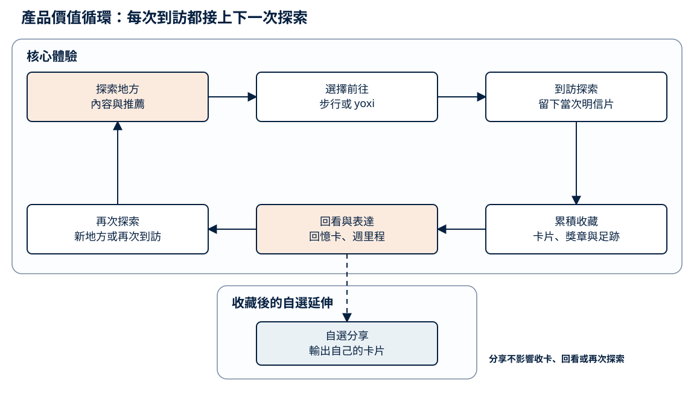
產品價值循環 · 點圖可另開分頁放大，正文保留條件與假設。 查看圖表文字與 Mermaid 原始碼 flowchart LR
DISCOVER["探索地方<br/>內容與推薦"]
MOVE["選擇前往<br/>步行或 yoxi"]
ARRIVE["到訪探索<br/>留下當次明信片"]
COLLECT["累積收藏<br/>卡片、獎章與足跡"]
MEMORY["回看與表達<br/>回憶卡、週里程"]
NEXT["再次探索<br/>新地方或再次到訪"]
SHARE["自選分享<br/>輸出自己的卡片"]
DISCOVER --> MOVE
MOVE --> ARRIVE
ARRIVE --> COLLECT
COLLECT --> MEMORY
MEMORY --> NEXT
NEXT --> DISCOVER
MEMORY -.-> SHARE
這個循環需要同時顧好內容、出行與收藏。地方不夠吸引人，使用者就不會形成前往意圖；前往流程太繁複，探索難以接到真實到訪；留下的內容缺乏地方特色，收藏也難以產生長期價值。因此，評估時不能只看某一個分享按鈕或單次卡片生成，要逐段確認體驗是否接得起來。
3. 三個核心服務與共同支援能力
探索與推薦負責回答「接下來可以去哪裡」。系統以已查核地方庫為基礎，結合使用者自選興趣、可接受的移動條件與授權互動，提供可理解的推薦理由。內容先有可信的來源與可到訪性，再談個人化排序。
出行與到訪負責把選擇接到現實行動。使用者查看地方後，可以步行前往，或將目的地帶入 yoxi 的叫車流程。抵達後，服務核對到訪條件，再留下當次明信片。來回接送可作為長輩情境的延伸選項，正式供給、候車條件與費率須依企業核可方案處理。
收藏與回憶負責保存個人的城市經驗。正式服務應讓地方卡片、到訪紀錄、獎章與足跡共同依據有效到訪資料，並清楚定義各項統計的範圍。現有原型的足跡只呈現底圖能辨識的地方，不能把卡片總數直接當作地圖上的地點數。回憶卡則讓使用者從去過的地方出發，加入自己的照片與心情；公開地方素材與個人表達因此各有用途，也能共用卡片的視覺語言。
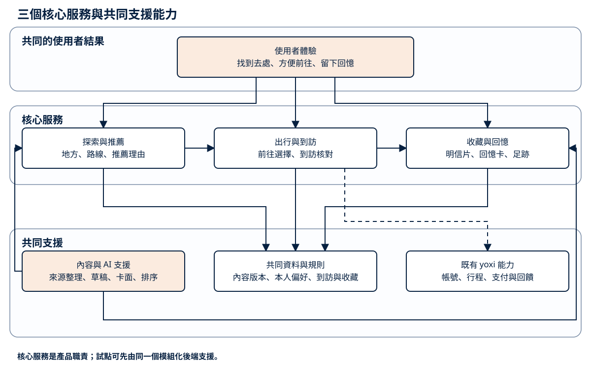
核心服務分層 · 點圖可另開分頁放大，正文保留條件與假設。 查看圖表文字與 Mermaid 原始碼 flowchart TB
EXPERIENCE["使用者體驗<br/>找到去處、方便前往、留下回憶"]
EXPLORE["探索與推薦<br/>地方、路線、推薦理由"]
VISIT["出行與到訪<br/>前往選擇、到訪核對"]
ALBUM["收藏與回憶<br/>明信片、回憶卡、足跡"]
CONTENT["內容與 AI 支援<br/>來源整理、草稿、卡面、排序"]
DATA["共同資料與規則<br/>內容版本、本人偏好、到訪與收藏"]
YOXI["既有 yoxi 能力<br/>帳號、行程、支付與回饋"]
EXPERIENCE --> EXPLORE
EXPERIENCE --> VISIT
EXPERIENCE --> ALBUM
EXPLORE --> VISIT
VISIT --> ALBUM
CONTENT --> EXPLORE
CONTENT --> ALBUM
EXPLORE --> DATA
VISIT --> DATA
ALBUM --> DATA
VISIT -.-> YOXI
圖中的三個核心服務是產品職責，不要求拆成三套獨立系統。試點可以使用一個模組化後端，將內容、到訪與收藏的規則分清楚，再依真實用量決定是否擴充分工。AI 作為共同支援，協助整理內容、建立素材與提供建議；正式行程、金額與收藏資格仍由明確的服務規則處理。
4. 資料如何支援這段體驗
地方內容庫是服務的共同底座，保存地點、主題、可用資訊、素材來源與發布版本。編輯先確認哪些地方值得推薦，AI 協助整理草稿與候選圖面，核准後才提供給使用者。這讓推薦與卡片使用同一份地方資料，也讓資訊更新能追溯到受影響的內容。
個人資料則以自選偏好、授權互動與到訪收藏為主。初次使用時可以直接看編輯精選，逐步累積選擇後再改善排序；一次點擊只是一個訊號，不能直接視為確定喜好。企業提供的彙總出行趨勢可用於選點與內容規劃，若無個人層級授權，便不拿來推定某位使用者的生活史。
觀測資料要能對應產品決策。例如，地方曝光與查看可判斷內容吸引力，前往選擇與有效到訪可判斷行動銜接，收藏回看與再次探索可判斷持續使用價值。所有比率保留分母與版本；探索帶來的搭車須沿用可追溯的入口紀錄，並與原本就有的叫車需求分開評估。
5. 由原型走向試點，再決定擴大投入
目前 HTML／PWA 已能展示探索、模擬行程、收卡、收藏與回憶卡的連續操作，適合先驗證使用者能否理解流程。現有回憶卡以地點模板、本機照片與心情組合成示意，尚未接線上 AI；現有行程與定位示意也不等同正式服務已串接。
試點先查核少量真實地方，逐張複核可沿用的示意卡面與授權，再讓「看見地方—前往—收卡—回看」整段可用。推薦理由是第一個面向使用者的 AI 驗證點：以本人選定的興趣與可用地方特徵產生短句，和固定模板比較理解度與前往意願；內容產線同步比較 AI 草稿與人工版本的品質及工時。規則推薦與模板保留為對照及備援，讓評估能辨認 AI 帶來的增益。只展示漂亮卡面或分享操作，還不足以回答 AI 是否改善核心體驗。
當有效到訪、收藏回看與內容維護需求逐漸清楚，再增加地方、路線及個人化能力。這個順序將新增內容量與真實使用連在一起，也能先看見編輯、維運與雲端的實際負擔。各階段的投入與估算範圍見 成本與資源 。
獨立手機 demo 可評估 Expo／React Native／TypeScript，以檢查定位、圖片輸出及裝置操作；若既有 PWA 已足以驗證體驗，可先沿用。正式接入 yoxi 時依企業原有技術決定實作方式，共用的是資料與服務契約。詳細部署、API 與裝置接點放在 技術附錄 。
6. 服務邊界與驗證重點
叫車的既有操作應維持清楚，新增探索入口不能增加不必要的步驟或遮住必要資訊。推薦或生成暫時不可用時，仍可使用已審地方內容與卡面；重送到訪請求時取回同一張卡，避免重複計入收藏。這些條件讓新增體驗具備可靠的基礎。
分享是收藏的自選延伸，由使用者預覽圖片後交給系統分享面板；外部聊天留在使用者選擇的平台。正文以製卡、收藏與再次使用評估核心服務，外部家人回應的價值另以自願訪談了解。詳細資料邊界集中在技術附錄，讓主線保持清楚。
流程設計｜從找到去處，到留下自己的城市回憶
本章說明使用者旅程、系統回應與例外處理。
1. 用一段完整旅程串起功能
使用者打開遊喜樂時，未必已經有明確的交通需求。他可能想找附近可走走的地方，也可能看到有興趣的景點，希望安排一趟出門。流程先協助他找到去處，再提供適合的前往選擇，讓探索與叫車依實際需求相接。
抵達後，地方明信片把「曾經來過」轉成可保存的紀念。收藏頁讓這些經驗逐漸累積；回憶卡則讓使用者再加入自己的照片與心情。下一次開啟時，可以回看過去，也可以從原有收藏延伸新的地方。分享是其中一個選項，主流程本身就能提供價值。
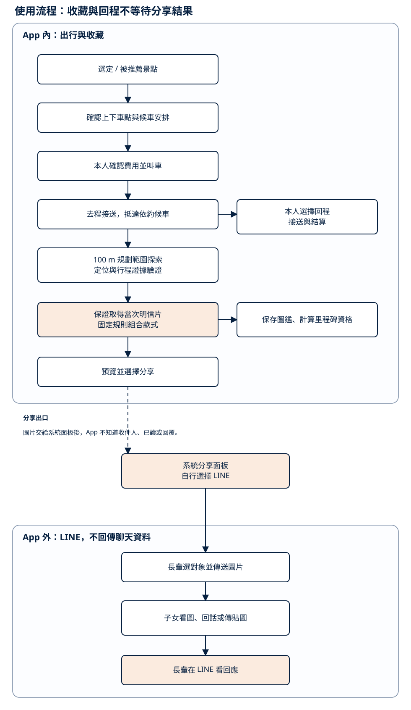
完整使用旅程 · 點圖可另開分頁放大，正文保留條件與假設。 查看圖表文字與 Mermaid 原始碼 flowchart TB
ENTRY["開始探索<br/>主頁卡片、推薦與地圖"]
PLACE["查看地方<br/>特色、推薦理由與前往資訊"]
WALK["步行前往<br/>依個人移動需求選擇"]
RIDE["搭 yoxi 前往<br/>確認目的地與報價"]
ARRIVE["到訪探索<br/>核對位置或授權行程證據"]
CARD["收下當次明信片<br/>固定規則選款、保存紀錄"]
ALBUM["回到個人收藏<br/>卡片、獎章與城市足跡"]
MEMORY["留下自己的回憶卡<br/>地點模板、照片與心情"]
NEXT["回看與再次探索<br/>新地方或再次到訪"]
RETURN["需要時安排回程<br/>依可用接送方案"]
SHARE["自選分享<br/>預覽後輸出圖片"]
ENTRY --> PLACE
PLACE --> WALK
PLACE --> RIDE
WALK --> ARRIVE
RIDE --> ARRIVE
ARRIVE --> CARD
CARD --> ALBUM
ALBUM --> MEMORY
ALBUM --> NEXT
MEMORY --> NEXT
NEXT --> ENTRY
ARRIVE -.-> RETURN
CARD -.-> SHARE
MEMORY -.-> SHARE
圖中的實線是核心使用路徑，虛線是使用者依需要選擇的延伸。走路、搭車、回程與分享各有自己的條件；卡片與收藏依有效到訪累積。以下依旅程說明每一步如何銜接。
2. 出發前：把有興趣的地方變成清楚的選擇
探索入口以主頁卡片與地圖上的地方提供少量有特色的選擇；點開卡片後，在浮動小卡查看地方與前往資訊。這與目前雙主頁原型的操作一致，舊的獨立詳情頁留作歷史流程。正式推薦在初次使用時可提供編輯精選，取得本人設定或授權互動後再加入個人化排序。地方介紹先說明值得去的原因，避免使用者只看到漂亮卡面卻不知道那裡有什麼。
推薦理由必須連回可用的條件，例如使用者自選主題或地方與目前探索區域的關係。系統只從上架地方庫選取，不生成不存在的地點或未知的營業資訊。資料不足時回到可查核的介紹，仍讓使用者自行選擇。
選定地方後，使用者依距離、時間與自身需求選擇步行或 yoxi。步行路徑保留日常探索的使用情境；搭車入口將地方帶入目的地，接續既有確認與叫車流程。原型中的距離、時間與車資用同一套公式示意，正式服務則使用企業核可的資訊，讓探索內容與實際出行一致。
3. 出行中：讓接送與到訪各自清楚
步行前往時，畫面提供目的地與到訪提示；搭車時，使用者確認上下車點及報價後，依既有行程狀態前往。AI 推薦到此已提供建議，實際叫車仍由本人確認。已在行程中的使用者應能容易找到行程與必要聯絡入口。
長輩情境可以進一步展示「去程—附近探索—回程」：先挑一個適合停靠與短距離走動的地方，需要時選擇可供應的來回接送。候車與費用規則要在出發前說清楚；回程由本人依需要安排，不等待收卡或分享。現有原型包含來回候車示意，正式商品、供給及費率仍待企業核可。
到訪核對是出行與收藏之間的接點。正式服務需綜合位置精度、取樣時間、場域條件與可用的授權行程證據；不能僅憑一個座標就認定有效到訪。原型中的距離與停留條件是展示規則，試點需針對不同場域驗證誤判與漏判，再調整適用門檻。
4. 抵達後：讓當次經驗成為可保存的卡片
符合收錄條件的到訪會取得明信片。系統依地點、日期、季節、交通方式與收錄歷史選擇既有款式，再加上對應紀念元素。使用者能理解為何拿到這張卡，也能在之後回看時辨識它屬於哪一次到訪。
卡面可以預先生成與審核，抵達時直接組合成品。這樣既可維持畫面品質，也不必讓使用者站在景點等待模型出圖。若圖片載入或輸出失敗，先保留有效到訪及收藏紀錄，恢復連線後再取回卡面。
目前已有固定選款、再次到訪與紀念元素的原型規則。正式資格由後端的有效紀錄判定；圖鑑與獎章沿同一份收藏資料計算。額外的客製相框、稱號或新里程碑樣式先留在擴充討論，不作本次核心旅程與預算的必要前提。
5. 回到 App：從收藏延伸自己的表達
收藏首頁提供明信片、回憶卡、週里程、城市足跡與獎章的入口。這些內容代表不同的回看方式：卡片記住地方，里程整理出行，足跡呈現去過的範圍。它們共同回答「我留下了哪些經驗」，而不是反覆呈現相同數字。
回憶卡從到訪過的地方模板開始，使用者可以加入照片與心情，再保存自己的版本。當天沒有到訪紀錄時，原型會清楚說明使用最近去過的地方；沒有收藏時則回到探索。現有實作在本機處理照片與模板排版，未接線上 AI；後續如加入生成能力，先驗證它能否減少修改負擔、保留地方特色與本人意思。
下一次開啟時，使用者可直接回看收藏，或再次找地方。以本人授權的到訪與興趣支援後續推薦，是未來可評估的服務方向；不把這個循環已經畫在圖上，視為已證明能提升留存。通知作為自選入口，沿用可關閉與頻率控制，避免以提醒量取代內容價值。
使用者想分享時，在卡片上預覽自己選定的圖文，再交給系統分享面板。圖片可帶到 LINE 等既有工具，外部聊天不回傳遊喜樂。完整分享資料邊界見 技術附錄 ，主流程的收藏與回程各自運作。
6. 例外情境要能回到原本的旅程
流程設計除了順利使用，也需要讓中斷可恢復。推薦暫時不可用時，以編輯精選維持探索；拒絕定位時，仍能閱讀內容與叫車，收卡另依可用證據補驗；重送請求時，應取回原本的行程或收藏結果，避免重複建立。
7. 試點如何檢查流程是否有效
體驗驗證先看使用者能否理解推薦、選擇前往、找到自己的卡，以及再次回到收藏。工程驗證則檢查步行與搭車都能銜接收卡、同一到訪不重複計入、款式有依據、斷線可恢復，以及新增內容不干擾叫車。
成效觀察沿同一段旅程保留曝光、查看、前往選擇、有效到訪、保存與回看事件。比如地方被看過卻少有人前往，要再區分內容吸引力、交通條件與操作阻力；不能只把問題歸給推薦模型。實驗期間與通過門檻由試點設計先定，結果與訪談共同決定下一步投入。
展示時可先演示一條附近步行收卡流程，再演示需要 yoxi 的出行情境，最後回到收藏製作回憶卡。每個畫面清楚標示實際能力與模擬訊號，讓評審能同時理解服務價值與現階段的實作程度。
AI 應用方法｜讓城市探索更貼近人，也讓內容能持續長大
對應：AI 在遊喜樂中解決什麼、使用哪些資料、如何產出，以及如何驗證。
1. AI 服務的是同一段城市體驗
遊喜樂的核心循環是「發現一個地方 → 選擇走路或搭 yoxi → 抵達 → 收下明信片 → 留下回憶卡與城市足跡 → 下次再訪」。AI 不另開一個聊天入口，而是在這段循環中處理四個會隨人數與城市增加而放大的問題。
第一，地方很多，使用者需要的是「此刻哪一個適合我」，不是更長的景點清單。第二，地方故事必須持續更新，但速度不能以犧牲出處為代價。第三，每座城市需要有辨識度的收藏素材，逐張手工製作不易擴張。第四，有些人想把照片、心情與足跡整理成一句自己的話，有些人只想保存原樣；系統應讓這層表達可以選擇。
長輩是最清楚的試辦情境：畫面要少選項、理由要看得懂，並依距離、可用時間與本人選擇決定走路或搭 yoxi。這不是只能搭車的流程，也不是只替長輩設計的模式；同一套能力仍適用於任何想慢慢認識城市的人。
2. 用途一：把「今天去哪裡」變成有理由的建議
問題
固定精選容易重複，純人氣排行又會把所有人推向同一批地方。對行動速度、出門時段與興趣不同的使用者，推薦若沒有理由，就很難建立信任。
輸入
推薦只使用已授權且與本次建議有關的訊號：已上架地方的主題與開放狀態、距離與天候、使用者自選興趣、自己的收藏缺口與近期到訪，以及 yoxi 可提供的去識別化時段、場域與熱門上下車趨勢。關閉個人化後，系統改用編輯精選與距離排序。
處理與輸出
程式先排除休館、資料不足、交通條件不合及近期已重複出現的地方，再以可解釋特徵排序。系統選出一個主要建議與少量備選，模型將實際存在的特徵改寫成一句自然理由。原型的距離、時間與車資使用共用資料及公式，正式報價以企業核可服務為準；「設為下車點」由介面與行程程式處理。
早期資料量不足時，採規則加權最容易檢查；有穩定的曝光與選擇資料後，再比較向量相似度或學習排序是否真的帶來改善。文字嵌入可協助比對地方主題與興趣語意，但不能取代距離、開放狀態與無障礙需求等硬條件。Google Cloud 文字嵌入文件 （查閱 2026-09-29）
驗證
先用固定案例檢查理由能否逐句指回輸入，再邀請一小組明確同意使用個人化資料的試辦者，比較「有依據的個人化理由」與固定理由模板對「看過後想去」、「加入路線」及「設為下車點」的影響，同時保留曝光分母。休館、距離、資料不足與本人設定一律由規則作硬篩選；模型沒有合格輸出時直接回固定模板。
3. 用途二：讓地方內容長得快，仍然指得回來源
問題
地方故事若只追求篇數，很快會出現過期資訊、錯誤年代或無法查證的說法。AI 的價值是縮短整理與起稿時間，發布責任仍在人。
輸入、處理與輸出
城市編輯先選定地方、可信來源與可引用片段。模型依片段產生短文、標籤與待查句子，並為每個主張附上來源識別碼；程式檢查欄位、來源是否存在與版本，最後由編輯核對事實、時間、地點、語氣及可到訪性。資料不夠時留白，不要求模型補出完整故事。
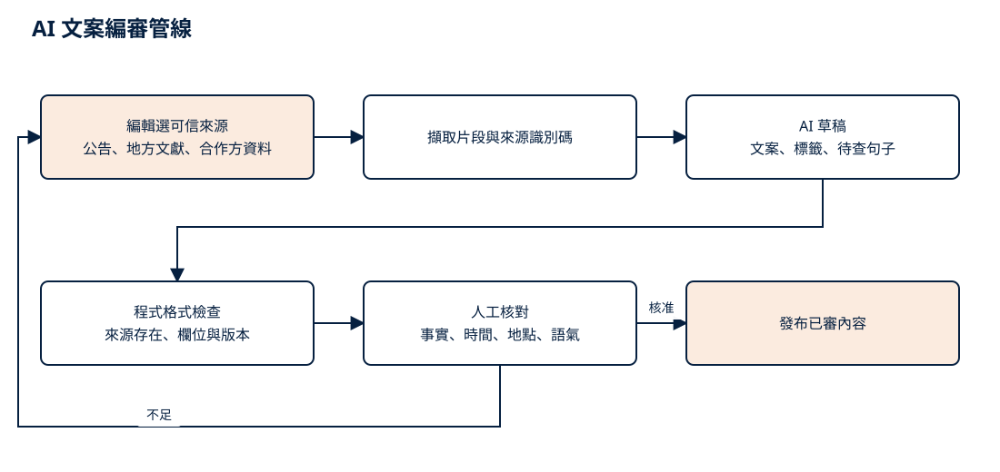
AI 內容產線 · 點圖可另開分頁放大，正文保留條件與假設。 查看圖表文字與 Mermaid 原始碼 flowchart LR
S["編輯選可信來源<br/>公告、地方文獻、合作方資料"] --> E["擷取片段與來源識別碼"]
E --> G["AI 草稿<br/>文案、標籤、待查句子"]
G --> V["程式格式檢查<br/>來源存在、欄位與版本"]
V --> H["人工核對<br/>事實、時間、地點、語氣"]
H -->|核准| P["發布已審內容"]
H -->|不足| S
這是小型、可控的檢索增強生成流程。初期可用結構化表與人工選段，不必先建大型向量平台。結構化輸出能限制欄位格式，卻不代表內容正確，因此來源比對與人工簽核不能省略。Google Cloud 結構化輸出文件 （查閱 2026-09-29）
選用理由與驗證
適合的文字模型要能穩定遵守欄位、處理繁體中文並在限定來源內起稿。選型不以版本新舊判斷，而以同一批來源的無依據句子率、編輯改字率、退稿率與每篇總工時比較。模型更新時重跑固定案例；未通過就保留既有版本或改用人工稿。
4. 用途三：先做可重用的圖像資產，不在每次抵達時即時生圖
問題
明信片要有城市辨識度，也要控制錯字、變形地標、商標與授權風險。若每次抵達才生成，等待時間、輸出品質與單次成本都更難控制。
輸入、處理與輸出
輸入是已授權的實景參考、地方類型、季節、光線、固定插畫風格與禁止項目。圖像模型批次產出候選，經自動檢查與人工逐張檢視後，只把核准成品放進圖庫。使用者抵達時，程式依季節、搭車方式、首訪與里程規則取用成品，再疊加邊框或郵戳。
repo 已有 DreamShaper 8 與 ControlNet Canny 預製的示意卡面，也保存參數與素材說明。它證明「批次生成 → 人工選圖 → App 讀成品」可操作，卻不代表這些圖已通過編輯、事實、授權與法遵審查，也不保證地標準確。試辦前須逐張複核，虛構或代理地點不得進入候選池；本機生成的硬體與維護成本也要計入。依據：生成腳本 、資產說明 。
雲端候選可用 Vertex AI 的圖像服務；Imagen 4、Fast 與 Ultra 在官方定價頁分別列出不同的文字生圖單價，但文字生圖不等於能精確轉繪特定建築。是否採用參考圖模型，要以地標可辨識率、候選可用率、重生輪數、商用條款與資料處理區域共同判斷。Google Cloud 圖像能力 與官方定價 （查閱 2026-09-29）
驗證
盲評每個地點的可辨識度、明顯錯誤與風格一致性；再計算每款產生幾張才有一張可用。上架資產保存來源、模型、提示版本與簽核紀錄，出現問題時可以撤回同批資產。
5. 用途四：回憶表達是選用能力，現況仍是本機模板
問題
足跡與里程能回答「去了哪裡」，卻未必能表達「那天對我有什麼感覺」。模型可協助把本人選的地點、照片與心情整理成短句或構圖建議，但這層能力不該擋住收藏，也不該替使用者虛構情緒。
現況與候選做法
現有 album-memory.js
若試辦加入 AI，只送出本人主動選擇的地點、心情與已同意處理的照片。模型可回傳兩三句短文或構圖參數，里程、日期、地方名稱與收藏張數仍讀程式資料。輸出先讓本人預覽、改寫或捨棄，不自動公開，也不讀取 LINE 私聊或家人回覆。
驗證
和固定模板比較保存率、本人修改比例、刪除比例與隱私疑慮；另以測試資料檢查數字、日期、地點及敏感內容。若多數人直接改寫，或隱私疑慮高於表達價值，就保留模板，不擴大個人化生成。
6. 候選工具與選用理由
下表是本次導入建議，不把候選寫成已部署事實。Google Cloud 是競賽與既有評估情境下的優先候選；正式採購仍要以測試集、區域可用性、資料政策、延遲與總成本選定服務。
Gemini 的模型名稱與價格依 官方定價頁 ，Cloud Run 的計費與區域依 官方定價 （皆查閱 2026-09-29）。Expo 技術分工見 01 章 。模型 ID 與價格用配置管理，產品規則不隨模型更換。
7. 上線前要回答的六個問題
推薦理由是否每句都能指回真實特徵？
地方文案是否每個事實都有來源，且編輯看過？
圖像是否看得出地方、沒有錯字與不適當品牌元素？
使用者關閉個人化或模型失效時，探索與收藏是否仍可使用？
回憶表達是否由本人主動選用、可修改、可刪除？
單位成本是否連同人工查證、退圖與重生一起計算？
評估結果記錄模型版本、提示版本、資料版本與人工判定。先用固定案例比較，再進小流量試辦；任何一項未過門檻，就回到當時已通過複核的內容、卡面或固定模板，不影響走路、叫車、抵達與收藏。
成本公式、查價快照與工時假設集中在 成本假設備註 ，讀者可重算而不必讓產品敘事被單價表切碎。
成本與資源｜分階段投入，驗證服務與擴城能力
本章回答：試辦要交出什麼、需要哪些角色、哪些成本只付一次、哪些會持續增加。
詳細單價、算式、工時拆分與敏感度集中在 成本假設備註 。正文保留採購與產品決策需要的層級，避免把暫時模型價格誤讀成完整預算。
1. 試辦投入的是一條可量測的服務
最小試辦先盤點 5 個可行候選地方（規劃假設），再逐一核對來源、授權、開放狀態與卡面。擬從 repo 沿用的 25 張卡面只能當示意成品，不代表已通過編輯或法務審查；任何虛構或代理地點都不能進入真實試辦。通過複核後，使用者可以收到一個有理由的地方建議，自己選擇走路或搭 yoxi，抵達後收下卡片，在收藏中看見里程與城市足跡，也能用本機模板做回憶卡。團隊同時能看到每一步的曝光、選擇、抵達、收藏與回看，才有依據判斷要不要加入更多地方與 AI 能力。
這個範圍刻意先複核少量內容與既有示意圖庫。推薦的硬條件與失敗退路由規則處理，AI 只在小型同意試辦中產生可追溯的個人化理由，和固定模板比較。回憶卡維持本機模板；分享交給手機系統面板。試辦不需要先即時生圖、不需要讓個人照片上雲，也不需要建立 LINE 私聊或家人關係資料庫。
試辦交付物
端到端體驗 ：地方建議、步行或設為下車點、抵達驗證、收卡、收藏、回憶卡與再次探索。5 個地方內容包 ：從可行候選中排除虛構與代理地點，核對來源、授權、開放狀態、交通條件、短文，並逐張複核最多 25 張示意卡面。推薦基準 ：規則負責硬篩選與固定模板退路；小型同意試辦比較可追溯的個人化理由與固定模板。AI 內容沙盒 ：同一批來源下的模型草稿與人工版本，記錄改字、退稿與查證工時；沙盒內容不直接發布。資產品質試驗 ：只在通過複核的卡面不足時批次產出少量候選，逐張審查並記錄可用率與重生輪數。量測與控制 ：事件定義、成本標籤、錯誤告警、功能開關與不影響叫車主流程的回歸檢查。試辦報告 ：使用行為、內容單位工時、圖像可用率、雲端用量、隱私回饋與下一階段建議。
2. 需要的是跨職能小隊，不是先買大量模型額度
試辦需要產品負責人掌握體驗與停損點，App 與後端工程師接上地方、抵達、收藏及事件，設計師處理長輩可讀性與卡面，城市編輯負責來源與語氣，資料或 AI 工程師建立推薦基準及評估流程，QA 驗證主流程，法遵與資安以部分工時審視定位、照片、授權與模型條款。
角色可以由既有團隊兼任，重點是每項判斷有明確負責人。城市編輯不能被模型帳號取代；AI 工程師也不應替編輯決定地方史是否可信。
3. 一次性投入：把服務、資料與安全邊界接起來
一次性投入有四包，彼此相關卻不能混成一個看似精確的總價。
3.1 現行試辦初估
依目前核心範圍，規劃初估為 236–384 小時，約 29.5–48 人天 （8 小時／人天）。這是新增規劃假設，涵蓋產品與設計、5 地方來源／授權／資產稽核、前端探索／收藏／回憶卡接入、後端抵達／收藏／事件、企業服務介接、AI 推薦理由與內容評估，以及整合 QA／易用性／成本分析；逐項區間見成本假設附錄第 9 節 。
估算假設既有 App 與企業服務可重用，企業介接有可用 API；不含獨立原生 App 重建，也不含派遣後端開發。角色可以重疊，但每項工作只計一次。此區間不是報價，也不換算人力現金；試辦交付的驗證報告是擴充內容產線前的守門依據。
3.2 內容與授權建檔
5 個候選地方先整理來源、座標、開放資訊、照片權利與既有示意卡面，並讓城市編輯及法遵逐一核對；虛構或代理內容直接排除。這筆成本與地方數、資料完整度及授權難度相關，和 App 使用者人數幾乎無關。
3.3 AI 評估環境
正式 AI 試辦至少需要版本化提示、固定測試集、輸出保存、人工標註、成本標籤與回退設定。若只呼叫模型 API 而沒有這些能力，團隊看得到生成結果，卻無法回答哪個版本較好、錯誤從哪裡來，或單位成本為何改變。
3.4 擴城前的內容產線
當試辦證明值得從 5 個地方擴到 60 個地方，才重新估算審稿介面、逐句來源、圖像批次與重試、資產清單及更完整的監控。擴城產線和現行試辦會共用資料結構、監控與測試，必須依驗證報告重新拆分，不能把歷史區間直接相加。
4. 持續成本：內容、人、請求與流量
持續成本要分成四種，才能知道規模變大時該控制哪一個旋鈕。
內容維護 隨城市數、地方數與更新頻率增加。城市編輯要查證新地方、翻新舊文、處理合作方資料、回應錯誤回報並審圖。文字模型可縮短起稿，無法消除查證、授權與實地確認。
預生成圖像 隨「新增地方 × 每地款式 × 每款候選」增加。成品上架後可重複使用，因此不會因每次抵達而再收一次生圖費。真正會放大的是候選淘汰與人工審圖，而不只是 API 單價。
個人化文字 隨實際模型請求增加。推薦理由可以預先批次生成並快取；初期回憶卡仍在本機套用模板，不呼叫模型。回憶文字的請求費只屬於未來選用式擴充，而且只有在本人主動選用時才發生。成本應從事件記錄取實際請求數與 token，不用註冊數或整體月活躍人數硬乘。
服務與傳輸 包含到訪／收藏 API、資料庫讀寫、批次工作、成品儲存、圖片傳輸、日誌與監控。卡面檔案本身不大，若大量反覆瀏覽，網路傳輸和快取策略會比靜態儲存更值得關注。
每月成本要把人工、模型與基礎服務分開。若採月聘城市編輯，該月的新地方查證、改寫與審圖工時已包含在人力包，不再另乘一次每地人工；若改用逐篇外包，則以每地人工取代月聘人力，兩者只選一種計法。
每月增量
= 人工與本地支出
+ 模型 API
+ 基礎服務
人工與本地支出
= 城市編輯月聘與既定內容額度
或（新增／翻新地方 × 每地人工單價＋逐案授權與實拍）
模型 API
= 新增／翻新地方 × 每地文字模型成本
+ 新增地方 × 款式數 × 候選數 × 圖像候選成本
+ 實際推薦請求 × 單次推薦成本
+ 主動使用回憶表達的請求 × 單次回憶成本
基礎服務
= 運算、資料庫、儲存、傳輸、日誌與監控
5. 四個主要規模驅動因子
城市數
跨城不只是多複製資料。每座城市都有新的來源、地方窗口、授權與更新節奏，因此城市數主要推高編輯與合作成本。先量出新竹每個地方的總工時，再推估下一城，比用人口比例外推可靠。
地方與款式數
地方數會同時推高文案、座標、授權、卡面與維護；每地款式數則直接乘上生成和審圖量。現行主情境用四季加搭 yoxi 抵達版共 5 款，節慶與里程以程式疊加，避免把同一底圖再生成多次。
活躍請求
推薦理由會隨互動量成長；選用式 AI 回憶文字則只在未來啟用後計入。先用夜間批次、快取與固定模板控制尖峰；只有使用者要求新內容時才即時呼叫。
品質門檻
候選可用率低、編輯改字多或地標不準，都會讓重生與人工時間上升。採購時要比較「一張核准成品」與「一篇發布內容」的總成本，而不是只比每張圖片或每百萬 token 的標價。
6. 三段投資，每一段都能停
第一段：5 個地方，驗證循環
從 5 個可行候選地方中取得可查來源、確認權利並逐張複核卡面；使用規則硬篩選與本機回憶卡。小型同意試辦另比較個人化推薦理由與固定模板。若使用者沒有走到收藏與再訪，先修正服務，不擴大生成量。
第二段：比較 AI 是否省下總工時
用同一批來源比較 AI 草稿與人工稿；用少量新地方比較圖像候選流程；用離線資料比較規則排序與較複雜方法。只有無依據句子率、改字率、候選可用率與總工時都在門檻內，才把 AI 放進正式產線。
第三段：擴到 60 個地方，再談跨城
這時才建審稿台、批次產線與跨城監控，並用新竹實測的單位工時、請求量和傳輸量重算預算。跨到第二城前，先確認一位編輯的容量、地方更新率與每張核准成品的真實成本。
7. 成本優化是產品取捨
最值得先壓低的不是 token，而是無用的候選、重複生成與人工返工。若較便宜模型讓編輯多花一倍時間，它就不是較便宜的方案。
8. 本章沒有計入的項目
和泰 Points 的發放與合作方分攤屬行銷預算；正式地圖與地點搜尋要依供應商、載入量與授權另估；EAS、商店帳號、稅、匯率、超出既定額度的攝影與授權、資安稽核及企業內部 API 改造也尚未計入。既有 55 張卡面的歷史製作成本沒有可靠工時帳，不回填為零，也不假裝能重現為相同現金成本。
雲端補助或競賽額度只能抵帳單，不能把原始成本寫成零。正式採購應以部署區域、資料政策與合約幣別重新查價；Google Cloud 官方頁面也明示 Cloud Run、Storage 與 CDN 會因用量、區域和流量方向而異。Cloud Run 、Cloud Storage 、Cloud CDN （查閱 2026-09-29）
9. 第一個月要帶回來的數字
試辦至少記錄每篇草稿的輸入輸出量、編輯改字率、無依據句子率、查證工時、每張候選檢視時間、候選可用率、重生輪數、實際推薦與回憶請求、成品大小、圖片傳輸與快取命中率。這些資料會把備註中的假設換成遊喜樂自己的單位成本。
最終採購判斷看四個結果：一篇可發布地方內容要多少總工時、一張核准卡面要多少總成本、一位活躍使用者帶來多少增量服務費，以及這些投入是否讓更多人走完探索、抵達、收藏與再訪。這四個答案比單一模型報價更能決定遊喜樂值不值得擴城。
八、補充資料｜從一次出門，到一張留得住的城市記憶
本章把提案中的產品主張接回可檢查的來源：畫面證明目前原型能怎麼操作，程式文件說明規則如何落地，外部文獻只提供設計依據。原型不能替代真實派車、到訪辨識、使用者研究或營運數據。
外部研究與官方技術文件查閱日：2026-09-29。競賽資訊沿用 repo 既有保存紀錄；送件前仍應核對官方公告與附件是否更新。
1. 產品證據要回答的，是同一段生活如何一路走下去
遊喜樂的核心不是多放一個景點頁，而是把原本彼此斷開的五個時刻接成一段可回來的城市關係：先看見一個地方，選擇走路或搭 yoxi；抵達後收下一張屬於這次造訪的明信片；卡片進入收藏，去過的地方逐漸形成城市足跡；之後再把自己的照片與心情做成回憶卡。搭車在這段路徑中有清楚的商業位置，步行也保留完整價值。
這段敘事有三種不同強度的證據。第一種是「已可操作」：現有 HTML／PWA 原型可以走過探索、移動、抵達、收卡、收藏與製卡。第二種是「已寫成規則」：畫面、狀態、卡面與路由在程式中有共同來源，能由測試核對。第三種是「待驗證」：正式派車、可靠的到訪判定、個人化推薦、後端同步與長期使用效果都還不是現成能力，也不應由截圖推論。
完整的服務責任、資料流、正式 API 候選與分享邊界集中在技術附錄 ，本章不重複展開。
2. 五張畫面，連成一條可操作的產品路徑
以下圖片都直接引用工作樹中的 app/assets/shots/，並已於 2026-09-29 逐張檢視。它們證明現有原型的畫面與互動狀態，不證明真實位置、即時車資、正式派車或上線成效。
2.1 探索：先讓地方值得出發
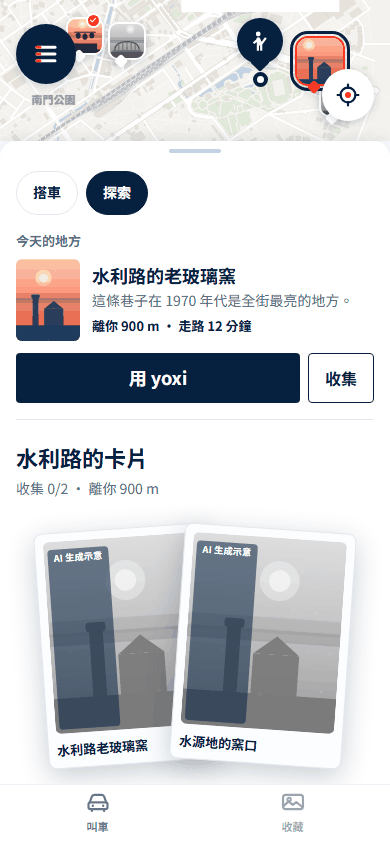
探索不是從叫車流程外另開一座內容島。畫面在同一個主頁面板呈現今天的地方、距離、步行時間、「用 yoxi」與收藏線索；使用者先因地方產生興趣，再決定移動方式。對應程式是 app/js/views/ride.js 的探索模式，產品契約見 App 架構 。畫面中的地點與距離是原型資料，不能當作地方史或即時位置的外部證據。
2.2 移動：近的地方走過去，遠的地方交給 yoxi
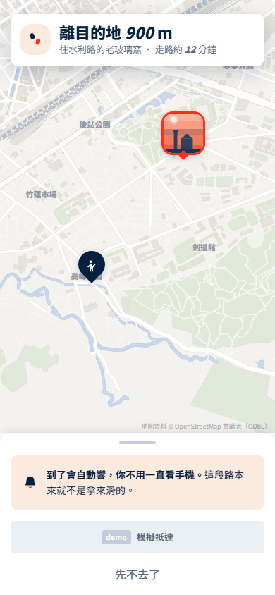
步行頁把注意力還給街道：保留路線、距離與抵達提示，不要求使用者一路盯著手機。搭車則沿用同一個地方與同一套收卡結果，由 APP.ride.trip 保存原型行程狀態。這能證明產品把兩種移動方式接到同一個目的地；地圖上的「模擬抵達」也清楚表示目前沒有用它主張真實定位驗證。
2.3 抵達：這一次來過，變成一張明信片
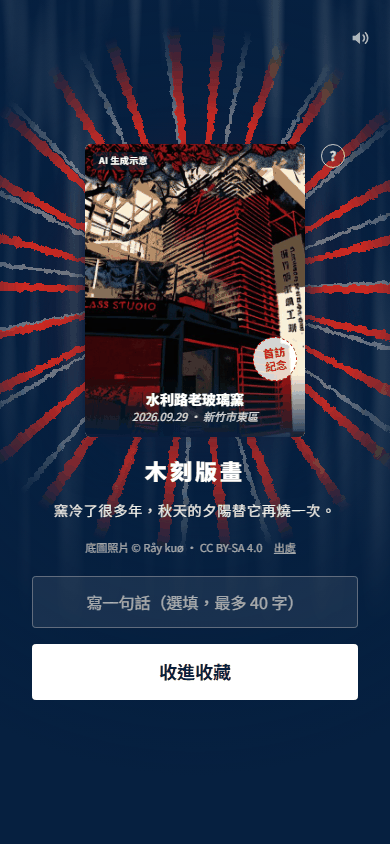
抵達後，地點、日期、移動方式與當期規則共同決定卡片樣式。現行規則沒有抽籤：同樣條件會得到同樣結果；app/js/views/explore-cards.js 提供判定，explore-unlock.js 畫抵達與收卡流程，explore-face.js 讓解鎖頁與收藏頁使用同一張卡面。圖片上的「AI 生成示意」與底圖出處是交付時應保留的誠實標示。
搭 yoxi 抵達時可呈現金框與同行紀念，但點數、門檻和出資方式仍是產品規則與商業假設，不能由 unlock-ride.png 推論企業已核准。正式版也需要伺服器端去重、到訪證據與版本紀錄，避免只相信手機端按鈕。
2.4 收藏：卡片不是終點，而是城市足跡的入口
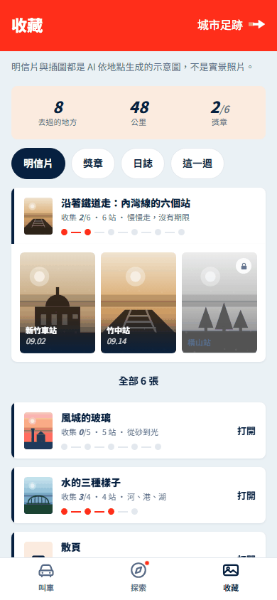
收藏首頁把去過的地方整理成明信片、回憶卡、期間里程、獎章與城市足跡。app/js/views/album.js 讀取同一份到訪狀態；APP.footprintPlace 再把可辨識座標的卡片映射到足跡地圖。這種整理方式讓一次出門在之後仍有可看的內容，也讓「下次去哪裡」能從自己的空白處長出來。
畫面中的張數、公里與比例都來自 demo 狀態或公式。足跡目前只涵蓋底圖能辨識的地方，不能拿來宣稱真實城市覆蓋率；計算限制記在 App 架構的地點正規化說明 。
2.5 回憶卡：讓使用者替自己的記憶加上一層意思
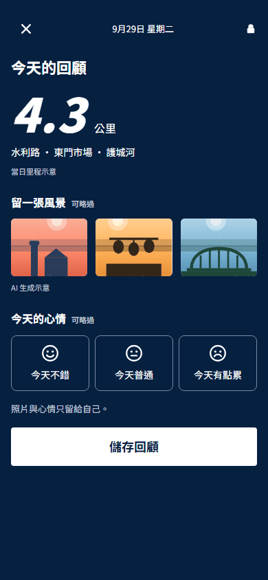
回憶卡從已造訪地點取模板，使用者可放入這台裝置上的照片並選一種心情，再保存成自己的卡。若今天沒有新足跡，畫面會明示改用最近去過的地方。這一步把制式明信片轉成個人敘事，也自然帶回「再去一次」的理由。
目前實作是本機構圖模板，照片先在裝置端縮圖，再與心情、構圖提示一併寫入 localStorage；它沒有上傳照片，也沒有呼叫 AI 生圖服務。程式入口是 app/js/views/album-memory.js，狀態契約見 App 架構 ，操作說明見 App README 。因此這張圖能證明製卡互動與本機保存，不能作為 AI 後端、跨裝置同步或雲端相簿已建置的證據。
3. 程式碼如何支持這條敘事
本機 remote 指向 Ricky610329/Yoxi_app_design 。本次只核對 remote 設定，沒有以未登入狀態驗證公開可讀性；對外送件時應改用評審可讀的固定 branch 或 commit permalink，並與交付版本一致。
現有 repo 也保留家人回話與 LINE 造型的歷史 mock。它們不列入上述證據鏈，也不能用來主張已串接 LINE、已建立子女帳號，或能取得收件、已讀與私聊內容。
4. 外部文獻只支持設計方向，不替產品效果背書
Ryan 與 Deci 對自我決定理論的整理，把自主、能力感與關係連結視為理解動機的重要構面。本案據此提出一個設計推論：讓人自己選地方、選步行或搭車，並看見自己的收藏逐步形成，可能比只增加外部獎勵更接近長期的個人意義。這篇研究沒有測試 yoxi、城市探索或本提案，也沒有提供可直接套用的留存百分比。Ryan & Deci, 2000，American Psychologist
Looyestyn 等人的系統性回顧納入十五篇有對照條件的線上方案研究。結果顯示部分遊戲化設計與較高參與相關，但研究場景、組件與品質差異很大，長期結果也較不一致。對遊喜樂最合理的用法，是把明信片、獎章與足跡當成需要試點檢驗的設計，而不是先宣稱它們會帶來多少開啟或搭車。Looyestyn et al., 2017，PLOS ONE
因此，這兩篇文獻支持「為什麼值得測」，不支持「效果已經發生」。成效指標、觀測窗與停損條件以 KPI 文件 為準。
5. 官方技術文件：用來界定可行路徑與限制
下列官方入口於 2026-09-29 可開啟。它們說明候選技術具備哪些能力，也同時提醒整合限制；並不表示現有 yoxi App 已採用這些元件。架構選擇與企業接法仍以實際技術現況為準，費率與用量試算集中在 成本與資源 ，本章不另抄單價。
現有示意卡的素材工具另有 DreamShaper 8 模型頁 與 ControlNet Canny 模型頁 可追溯。這只能說明現有素材如何產生，不能自動延伸成正式商用權利判定。
6. 競賽、資料、商業與素材來源
競賽公開入口沿用既有紀錄：競賽官網 、題目附件 。若連結失效或內容更新，以主辦方最新公告為準。
照片作者、授權與出處以 credits.js 及 卡面素材說明 為依據；裁切、改作與分享版本仍需逐張核對。地圖使用 repo 內的 OpenStreetMap 資料並保留署名，開放資料授權不等於所有圖磚、SDK 或營運服務都免費。企業提供、未授權公開的解題資料不放進 repo；示範欄位使用合成案例。AI 卡面、模擬行程、示意地點與尚未串接的功能都應在畫面或講稿中清楚標示。
7. 評審可以據此檢查什麼
評審可從五張畫面順著實際路徑檢查產品是否連貫，再由程式入口核對畫面是否共用同一份規則與狀態；也可由生成參數、照片授權與官方文件追查素材和技術來源。這些材料足以證明團隊已把產品概念做成可操作、可讀、可測的原型。
還不能由這些材料下結論的，包括正式派車可用性、真實到訪準確率、AI 推薦品質、跨裝置資料一致性、內容營運成本，以及開啟率、回訪、叫車轉換或收入改善。這些問題應交給試點、企業資料與預先定義的指標回答，而不是由 demo 數字或畫面觀感代替。
技術附錄｜服務接點與實作候選
本附錄供工程評估使用。正文先交代探索、出行與收藏如何連成體驗；以下再展開候選部署、裝置接點與例外處理。所有雲端 API 與 Expo 接入均為提案，現有 HTML／PWA 是可操作的流程原型。
1. 新增服務與既有 yoxi 的接點
方塊代表職責，初期可由一個模組化 API 與背景工作承接。帳號、行程、支付與回饋沿用企業授權服務；地方內容、到訪與收藏由新增模組管理。圖以長輩使用情境展開裝置端，不代表服務限定長輩使用。里程碑客製樣式與 Points 介接屬延伸候選，核心試點先沿用收藏與獎章。
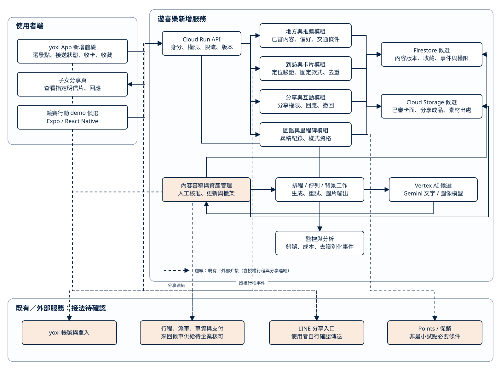
完整服務架構 · 點圖可另開分頁放大，正文保留條件與假設。 查看圖表文字與 Mermaid 原始碼 flowchart TB
subgraph CLIENT["長輩行動端"]
APP["yoxi App 新增體驗<br/>景點、行程、收卡、收藏"]
DEMO["獨立手機 demo 候選<br/>Expo / React Native"]
EXPORT["卡面輸出<br/>預覽、疊字、本機圖片"]
end
subgraph NEW["遊喜樂新增服務"]
API["Cloud Run API<br/>身分、權限、限流、版本"]
PLACE["地方與推薦<br/>已審內容、偏好、交通條件"]
VISIT["到訪與卡片<br/>定位驗證、固定規則、去重"]
BOOK["圖鑑與里程碑<br/>累積紀錄、樣式資格"]
DB["Firestore 候選<br/>內容版本、收藏、必要事件"]
STORAGE["Cloud Storage 候選<br/>已審圖庫與素材出處"]
JOB["背景工作<br/>批次生成與重試"]
AI["Vertex AI 候選<br/>文字與圖像模型"]
CMS["內容管理<br/>人工核准與撤架"]
OPS["監控與分析<br/>錯誤、成本、使用事件"]
end
subgraph EXIST["既有 yoxi：接法待企業確認"]
ID["企業帳號與登入"]
RIDE["行程、派車、車資與支付<br/>來回候車供給待核可"]
POINTS["Points / 促銷<br/>非試點必要條件"]
end
subgraph OUTSIDE["App 外：由使用者自行操作"]
OS["手機系統分享面板"]
LINE["LINE 選對象、傳圖片"]
FAMILY["子女看圖、家人聊天<br/>內容與身分不回傳 yoxi"]
end
APP --> API
DEMO --> API
APP --> EXPORT
DEMO --> EXPORT
EXPORT -.-> OS
OS --> LINE
LINE --> FAMILY
API -.-> ID
APP -.-> RIDE
API --> PLACE
API --> VISIT
API --> BOOK
RIDE -. "授權行程事件" .-> VISIT
VISIT --> DB
PLACE --> DB
BOOK --> DB
VISIT --> STORAGE
CMS --> JOB
JOB --> AI
AI --> CMS
CMS --> DB
CMS --> STORAGE
BOOK -.-> POINTS
API --> OPS
JOB --> OPS
2. 獨立手機 demo 的候選技術棧
Expo／React Native／TypeScript 用於評估手機 UI、前景定位、圖片輸出與實機操作。是否採用取決於展示需求與團隊能力；既有 PWA 可持續承擔流程測試。正式 yoxi App 的介接方式由企業技術現況決定。
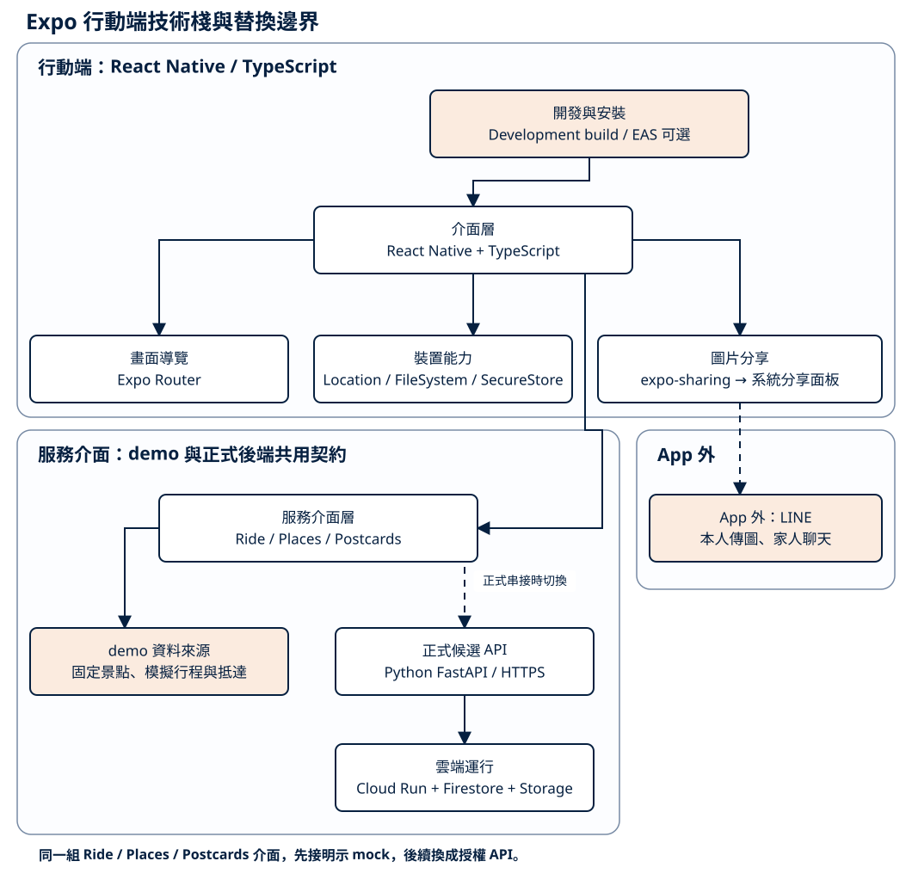
Expo 行動 demo 技術棧 · 點圖可另開分頁放大，正文保留條件與假設。 查看圖表文字與 Mermaid 原始碼 flowchart TB
UI["介面層<br/>React Native + TypeScript"]
ROUTER["畫面導覽<br/>Expo Router"]
DEVICE["裝置能力<br/>Location / FileSystem / SecureStore"]
SHARE["圖片分享<br/>expo-sharing → 系統分享面板"]
ADAPTER["服務介面層<br/>Ride / Places / Postcards"]
MOCK["demo 資料來源<br/>固定景點、模擬行程與抵達"]
API["正式候選 API<br/>Python FastAPI / HTTPS"]
CLOUD["雲端運行<br/>Cloud Run + Firestore + Storage"]
LINE["App 外：LINE<br/>本人傳圖、家人聊天"]
BUILD["開發與安裝<br/>Development build / EAS 可選"]
BUILD --> UI
UI --> ROUTER
UI --> DEVICE
UI --> SHARE
SHARE -.-> LINE
UI --> ADAPTER
ADAPTER --> MOCK
ADAPTER -. "正式串接時切換" .-> API
API --> CLOUD
3. 從原型到正式服務的交付選項
圖中的 Expo 是可選的手機驗證階段。共同資料契約可分別接模擬資料與正式 API；正式接入需重新驗證帳號權限、行程事件、資料持久化與復原流程。
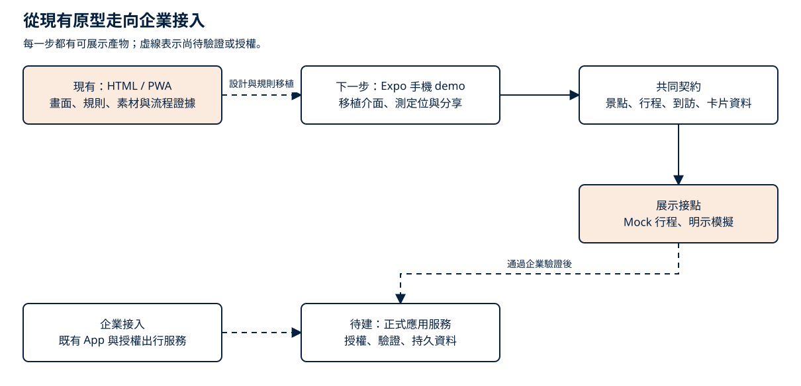
從原型到正式接入 · 點圖可另開分頁放大，正文保留條件與假設。 查看圖表文字與 Mermaid 原始碼 flowchart LR
WEB["現有：HTML / PWA<br/>畫面、規則、素材與流程證據"]
EXPO["下一步：Expo 手機 demo<br/>移植介面、測定位與分享"]
CONTRACT["共同契約<br/>景點、行程、到訪、卡片資料"]
MOCK["展示接點<br/>Mock 行程、明示模擬"]
BACKEND["待建：正式應用服務<br/>授權、驗證、持久資料"]
YOXI["企業接入<br/>既有 App 與授權出行服務"]
WEB -. "設計與規則移植" .-> EXPO
EXPO --> CONTRACT
CONTRACT --> MOCK
CONTRACT -. "通過企業驗證後" .-> BACKEND
YOXI -.-> BACKEND
4. 自選分享的資料邊界
使用者先預覽輸出圖文，再由系統分享面板自行選擇 LINE 等工具。私人聊天、收件人與回覆不回傳遊喜樂；收藏與回程不以分享結果為條件。可觀測的是製卡、圖片輸出與分享操作，API 返回或 App 回到前景均不能視為實際送出。
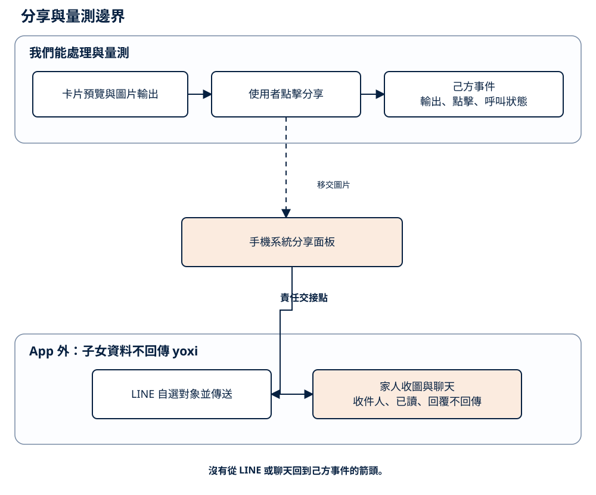
分享與資料邊界 · 點圖可另開分頁放大，正文保留條件與假設。 查看圖表文字與 Mermaid 原始碼 flowchart LR
subgraph OWN["我們能處理與量測"]
CARD["卡片預覽與圖片輸出"]
TAP["使用者點擊分享"]
EVENT["己方事件<br/>輸出、點擊、呼叫狀態"]
CARD --> TAP
TAP --> EVENT
end
TAP -. "移交圖片" .-> OS["手機系統分享面板"]
subgraph EXTERNAL["App 外：子女資料不回傳 yoxi"]
LINE["LINE 自選對象並傳送"]
CHAT["家人收圖與聊天<br/>收件人、已讀、回覆不回傳"]
LINE --> CHAT
end
OS --> LINE
5. 搭車收卡與自選分享的情境時序
這張時序只展開搭車收卡後選擇分享的一個情境，不代表全部使用者都需叫車或分享。回程與分享各自獨立，使用者可在需要時安排回程。
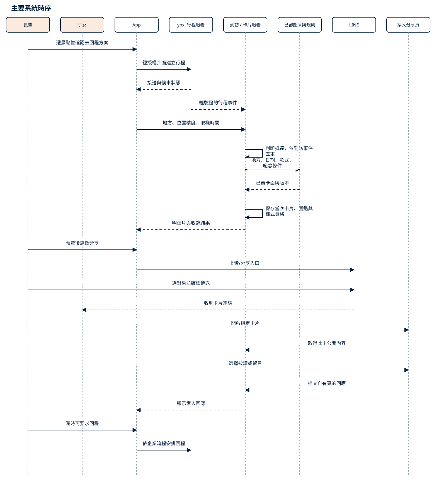
核心服務時序 · 點圖可另開分頁放大，正文保留條件與假設。 查看圖表文字與 Mermaid 原始碼 sequenceDiagram
actor U as 長輩
participant A as App
participant Y as yoxi 行程服務
participant V as 到訪 / 卡片服務
participant O as 系統分享面板
participant L as LINE（外部）
actor C as 子女
U->>A: 選景點並確認去回程方案
A->>Y: 經授權介面建立行程
Y-->>A: 接送與候車狀態
Y-->>V: 經驗證的行程事件
A->>V: 地方、位置精度、取樣時間
V->>V: 驗證與去重，保存卡片及圖鑑
V-->>A: 已審底圖、款式與紀念欄位
A->>A: 組卡、預覽、輸出本機圖片
U->>A: 選擇分享
A->>O: 移交圖片並記錄呼叫狀態
U->>O: 選擇 LINE
O->>L: 交付圖片給外部 App
U->>L: 選對象並確認傳送
L-->>C: 子女在 LINE 看圖
C->>L: 在 LINE 回話或傳貼圖
L-->>U: 長輩在 LINE 看回應
U->>A: 返回 App，可安排回程
A->>Y: 依企業流程安排回程
6. 候選 API 與資料責任
正式服務需由後端保存有效到訪及收藏紀錄，手機負責互動與呈現。請求重送時應取回同一結果；卡面輸出失敗時保留收藏紀錄，再讓使用者重試。
個人化可使用本人自選偏好及授權互動；企業彙總趨勢用於選點與內容供給，不直接當成某位使用者的生活史。位置訊號須考慮精度與時間，原型中的距離門檻不等同正式防刷方案。企業私鑰與模型金鑰留在伺服器，編輯發布權限與一般使用者分開。
7. 發布、復原與觀測
地方內容與卡面需保存來源、模型／提示版本及核准狀態，讓過期資訊或錯誤素材可撤架。推薦與生成失敗時，回到編輯精選與既有模板；出行與已有收藏維持可用。紀錄失敗率、資料庫用量、模型請求與圖片傳輸，才有依據調整容量。
裝置端可處理個人照片與圖片輸出；若後續需要雲端生成個人卡面，應另外定義使用者同意、上傳範圍、保存期限、刪除與單次成本。既有模板原型不能視為已具備該雲端能力。
技術來源集中於 補充資料 ，成本拆解見 成本假設附錄 。
遊喜樂成本假設與可重算公式
用途：保存 04 章 背後的內容量、單價快照、工時區間、算式與敏感度。
1. 估價邊界
本備註只估遊喜樂新增的地方內容、卡面、推薦與回憶文字、必要增量雲端，以及部分功能接入與內容產線人時。不含既有 yoxi 派遣、登入、支付、客服與公司共用平台，也不含 Points、正式地圖 API、EAS、商店帳號、稅、匯率波動與另購授權。
跨幣別示例暫用 1 USD = NT$32，標記為假設。正式採購應使用財務核定匯率與 Cloud Billing 實際 SKU。
2. 內容量假設
5 款指春、夏、秋、冬與搭 yoxi 抵達版。節慶、首訪與里程標記以程式疊加，不另生成底圖。
repo 的 p1–p11 共有 55 張示意成品，由 DreamShaper 8＋ControlNet 依 repo 參考素材預生成；來源為 app/assets/postcards/README.md
3. 官方價格快照
官方來源為 Google Cloud 生成式 AI 定價 ，查閱 2026-09-29。價格會變，模型區域與可用狀態也可能不同；每次採購前要重查。
Imagen 表列的是文字提示生成圖片。若要依參考照片維持建築構圖，需選支援該輸入方式的流程，重新核對輸入、輸出、區域及商用條款；不能直接套用 US$0.04。
Google Search Grounding 可能另按查詢數計費，且模型使用費仍分開計算。本備註的草稿單價不含 grounding；需要時以「實際計費查詢數 × 查價日官方費率」另加。
4. 文字內容單位成本
以下 token 量都是估算。串接後要用 API 回傳的實際用量替換。
草稿一輪
= (8,000 輸入 × US$1.50 + 1,500 輸出 × US$9.00) ÷ 1,000,000
= US$0.0255
草稿一篇
= 3 輪 × US$0.0255 + US$0.003 查核包假設
= US$0.0795
路線一條
= (20,000 輸入 × US$1.50 + 3,000 輸出 × US$9.00) ÷ 1,000,000
= US$0.057
公告摘要一則
= (3,000 輸入 × US$0.30 + 300 輸出 × US$2.50) ÷ 1,000,000
= US$0.00165
每城每月內容文字
= 34 × US$0.0795 + 300 × US$0.00165 + 1 × US$0.057
= US$3.255，四捨五入為 US$3.26
US$0.003 查核包是假設，不是官方固定費。若用 5,000 輸入、500 輸出計算，Flash-Lite Global 為：
(5,000 × 0.30 + 500 × 2.50) ÷ 1,000,000
= US$0.00275，四捨五入約 US$0.003
5. 圖像候選與自動檢查
圖像自動檢查 US$0.00101 是 token 假設，不是官方每圖價格：
[(2 × 1,120 圖像 token + 300 文字 token) × 0.30
+ 100 輸出 token × 2.50] ÷ 1,000,000
= US$0.001012，四捨五入為 US$0.00101
每張圖 1,120 token 與其餘 token 量沿用舊試算。串接後須以實際計數替換，也要保留人工逐張檢視。
60 地方建庫
地方草稿：60 × US$0.0795 = US$4.77
種子路線：3 × US$0.057 = US$0.17
5 款候選圖：60 × 5 × 3 × (US$0.04 + US$0.00101) = US$36.91
模型費毛額：約 US$41.85
若既有 11 個地方與 55 張示意成品全數通過事實、授權與卡面複核，只補其餘 49 個地方：
49 × 5 × 3 × US$0.04101 = US$30.14
US$30.14 是 11 個地方全部通過複核的理論下界；US$36.91 是 60 個地方全部重生的圖像毛額。兩者都是擴城容量試算，不是 5 地方試辦的新增模型費，也不含既有示意成品的複核與修正。
每城每月
34 篇草稿、300 則公告摘要、1 條路線：US$3.26
5 款候選圖：20 × 5 × 3 × US$0.04101 = US$12.30
文字與圖像模型費：約 US$15.56
匯率假設換算：US$15.56 × 32 ≈ NT$498
6. 城市編輯工時與現金假設
初始 60 地方
城市編輯公司成本假設為 NT$71,500／月、160 小時／月，每小時約 NT$447。189 小時約 NT$84,500，339 小時約 NT$151,500，差額約 NT$67,000。這是容量等值，不表示一定多付或少付同額現金。
建庫後每城每月
現金假設為城市編輯 NT$71,500／月，加外包查證、攝影與照片授權額度 NT$15,000／月，共 NT$86,500／城／月。模型費另計。
5 款主情境每月有 300 張候選。若逐張看 30 秒、1 分鐘、2 分鐘，分別需要 2.5、5、10 小時；把舊 6 小時額度換成完整審圖後，月總工時分別為 112、114.5、119.5 小時。
以 1 分鐘主情境估算：
NT$86,500 + US$15.56 × 32
≈ NT$86,998／城／月
這不是完整月預算，尚未加入服務運算、資料庫、儲存、傳輸、日誌、稅與其他未含項。
7. 活躍請求變動費
推薦理由與選用式回憶文字按真正送進模型的請求數計價。初期試辦的回憶卡只用本機模板，因此回憶文字請求為 0；下列回憶公式與 3,000 人示例只供未來選用式 AI 回憶擴充估算。以下示例採 Flash-Lite Non-global 標準價，不假設 Batch 折扣。
推薦理由單次
= (1,500 輸入 × US$0.33 + 150 輸出 × US$2.75) ÷ 1,000,000
= US$0.0009075
回憶文字單次
= (800 輸入 × US$0.33 + 200 輸出 × US$2.75) ÷ 1,000,000
= US$0.000814
當月文字變動費
= 實際推薦請求數 × US$0.0009075
+ 實際回憶請求數 × US$0.000814
擴充情境示例：當月 3,000 位活躍使用者，平均每人觸發 8 次推薦理由，並在主動開啟 AI 回憶功能後使用 4 次回憶文字。這不是初期本機模板試辦的用量。
推薦：24,000 × US$0.0009075 = US$21.78
回憶：12,000 × US$0.000814 = US$9.77
合計：US$31.55／月
這只含模型文字費。Cloud Run、資料讀寫、快取與監控另計。實務上從事件紀錄取兩種請求數並量實際 token，不用註冊數或整體 MAU 代替。
8. 服務與資產雲端公式
每月內容產線增量雲端
= 文字模型
+ 圖像模型（新增地方 × 5 款 × 候選數 × 每張單價）
+ 自動檢查（候選張數 × 每張檢查費）
+ 批次工作（vCPU 秒＋記憶體秒）
+ 成品儲存（GiB-month）
+ CDN／網路傳輸（實際 GiB）
+ 日誌與監控
建庫後每城約 300 張正式圖；若每張 WebP 250 KB，約 75 MB。每月新增 100 張約 25 MB。靜態量不大，反覆瀏覽造成的傳輸可能更值得關注，需以帳單與快取命中率重算。
Cloud Run 依資源用量與區域計價；Cloud Storage 成本由儲存、操作、資料處理與網路組成；Cloud CDN 計快取傳出、填充與查詢。官方入口：Cloud Run 、Cloud Storage 、Cloud CDN （查閱 2026-09-29）。在部署區域、請求延遲、資料庫與流量未知前，不報整體雲端總價。
完整服務另加到訪／收藏／必要事件 API 的 CPU、記憶體、資料庫讀寫與儲存。主方案在裝置端製作分享圖並開啟系統分享面板，不建家人關係、留言或私聊 API，也不保存 LINE 收件人與私聊內容，因此不列相關資料庫費。
9. 現行試辦資源初估（新增規劃假設）
下表依現行核心重新估算，只適用於既有 App 與企業服務可重用、企業介接已有可用 API 的情境。不含獨立原生 App 重建、派遣後端開發、60 地方內容產線、正式跨城營運與額外相框或稱號。
下界為 24＋12＋48＋56＋24＋32＋40＝236；上界為 40＋24＋72＋88＋40＋56＋64＝384。角色可以由同一人兼任，但每個工作包只計一次；角色重疊不等於把兩包相同工時再加一次。這是工作量假設而非報價，在沒有企業職級與採購單價前不換算人力現金。
試辦輸出必須包含來源／授權稽核、推薦理由對照、整合 QA、易用性與實際成本報告。這份驗證報告是擴到 60 地方、導入 AI 回憶或投入正式內容產線前的守門依據。
10. 歷史接入情境（只供追溯）
舊版 5 地方整合切片
下表保存舊版情境的算法。當時範圍含去回程狀態、系統分享、圖鑑與獎章及首款里程樣式；現行核心加入回憶卡，並排除額外相框與稱號，因此不能把此總數當成現行核心的核定預算。表內也沒有正式推薦服務、內容審稿台、圖像產線、模型治理與企業 API 缺口。
下界算式為 16＋24＋40＋16＋40＋40＝176；上界為 24＋40＋64＋24＋64＋64＝280。
這是舊版需求的歷史切片，不是現行核心範圍、完整 AI 部署成本或整個遊喜樂的上線預算。新估價時可沿用各列作訪談起點，但要刪除不再需要的工作、加入回憶卡與新資料邊界，再依企業現況重估。
60 地方內容產線元件（舊估算）
上線後每月另留平台維護 8–16 小時、資料與成本檢查 4–8 小時、QA 4–8 小時。此表與前表的資料結構、介接、監控及測試可能重用，不能直接相加；需依既有服務覆蓋程度重估。
11. 圖像款式敏感度
混合單價的 US$0.067／張是舊文件的參考圖模型情境，不宣稱是本次查價日的通用現價。它只用來保存舊敏感度比較；正式選型後要替換。
即使只保留 5 款，若 30% 候選仍需參考圖，沿用歷史混合單價示例：
初始：900 × US$0.04911 ≈ US$44.20
每月：300 × US$0.04911 ≈ US$14.73
沿用本機 ControlNet 時，要記硬體占用、電力、操作與依賴維護工時，不能視為免費。
12. 里程與節慶樣式
在既有底圖上疊邊框、郵戳或文字時，單次 AI 圖像費為 US$0，成本落在設計、排版、規則、QA 與少量資料讀寫。單款疊加樣式可拆為設計與排版 8–16 小時、規則與測試 8–16 小時。舊版情境的 40–64 小時已含基本圖鑑、獎章與首款里程樣式，因此回看舊試算時不可再加一次；現行核心不含額外相框與稱號，需依新範圍另估。
若新里程樣式需要一套預生成底圖：
一次成本
= 樣式數 × 每款候選數 ×（選定模型輸出單價＋自動檢查費）
+ 逐張審圖人時
例：4 款、每款 3 張候選，若純文字基準適用，模型與檢查為 4 × 3 × US$0.04101 = US$0.49，另有 12 張人工審圖。需要參考照片時不可套用此單價。
13. 主要敏感度
成本控制順序：先量每款 2 或 3 張候選的可用率，再比較模型；生成採上架前批次，App 執行期只取已審成品；節慶與里程優先用程式疊加。
14. 未含項
15. 第一個月替換假設的量測
至少記錄草稿 token、編輯改字率、無依據句子率、每篇查證工時、每張候選檢視秒數、候選可用率、重生輪數、成品大小、推薦與回憶實際請求、CDN 傳輸與快取命中率。
對外引用現行試辦時應說：「236–384 小時是既有 App 與企業服務可重用前提下的新增規劃假設，不是報價。」歷史區間只供追溯，不能加進現行試辦總數；模型 API 小計也不能描述為完整月營運成本。
撰稿與驗證紀錄
日期：2026-09-29。分支：docs/service-centered-proposal，起點：2d721b2。範圍為 pitch/writing/、pitch/BRIEF.md 及交接紀錄；App、原型、簡報與影片的來源檔未修改。
本次重寫的判斷
正文改由探索、步行或搭車、到訪、收藏與回憶串成服務循環。三個核心服務是探索與推薦、出行與到訪、收藏與回憶。分享、SDK、API 與部署移到技術附錄，逐項單價與歷史估算移到成本附錄。表格用於比較與查證，主張與取捨由敘述說清楚。
圖解新增產品循環，重畫服務架構與完整旅程，AI 內容產線保留。技術圖移到附錄；早期機率卡備存預設收合且不列印。五張原型截圖按探索、移動、抵達、收藏、回憶卡排列。
內容複核已對齊現有雙主頁與浮動卡片操作，以及本機回憶卡。圖像素材屬示意，不能直接視為已核准的正式圖庫；試點前需複核真實地點、來源、授權與卡面。足跡只涵蓋底圖可辨識的地方，卡片總數不等同地圖地點數。
文件與成本檢查
本次核對 Markdown 本機連結、圖片路徑、程式區塊配對及專案禁用詞。補充資料引用的五張工作樹截圖皆逐張查看。外部模型價格與能力由官方頁面查核，研究採原始文獻，來源與查閱日期保存在各章；競賽附件只沿用既有紀錄，未宣稱重新取得。
成本將人工、模型與基礎服務分開，月聘人力與逐篇人工不重複計算。舊版 176–280 小時接入估算與 284–456 小時內容產線都保留歷史範圍，不直接相加或當作本版的上線預算。現行試點依交付內容另列初步人時假設；所有範圍均需在企業 API 與可重用元件盤點後調整。
重點模型試算已重算：每輪草稿 US$0.0255、每月內容文字 US$3.255（顯示 US$3.26）、五款圖面初期 US$36.91／每月 US$12.30、選用式推薦與回憶文字範例 US$31.55。這些是替代或局部情境，並非完整服務費。
原型前後回歸
修改前與文件重寫後皆執行：
python prototype/tools/verify-quiet.py
兩份報告皆有八段完整結果：幾何、DOM、結構、互動、全站、圍牆、樹、功能數；沒有 FAIL 或缺少瀏覽器回傳。比較整份報告，忽略行序後完全一致，六條承諾數值不變。
E、F 原本已有 3、39 處 DOM 差異，前後一致，不能將腳本通過解讀為所有變體與主畫面完全相同。驗收產生的 prototype/assets/load.js、load.json 只有時間戳變動，已還原，未納入文件提交。
此環境在 sandbox 內執行 Chrome 曾回報空結果，甚至將 DOM 計成 0；那次輸出不作驗收證據。有效基準與結束報告均由獲准的 sandbox 外執行取得，保存於系統暫存目錄 yoxi-proposal-baseline.txt 與 yoxi-proposal-final.txt。
閱讀版與圖面檢查
閱讀版包含十份文件：導讀、五個正文章節、技術附錄、成本假設、驗證紀錄與收合備存。十張 SVG 使用固定來源雜湊，來源變更時須同步檢閱布局。新增三張主圖已查看獨立 PNG，並調整服務架構的支援箭頭以避免與資料線重疊。
Chrome 桌面 1440 px 與手機 390 px 檢查導覽、目錄高亮、字體切換、備存展開、產品循環圖解捷徑與列印按鈕。正文與放大字體均無水平溢出，圖片全部載入，沒有外部資源請求。圖解可另開放大，表格在窄螢幕內可獨立捲動。
重跑方式：
python pitch/writing/tools/render_diagrams.py --check
python pitch/writing/tools/build-reader.py
python pitch/writing/tools/check-reader.py
瀏覽器報告與截圖保存在系統暫存目錄 yoxi-writing-reader-check；主圖 PNG 在 yoxi-diagrams-preview。本次驗證列印入口會呼叫瀏覽器列印，未另交付或逐頁校對 PDF。
交接時保留的界線
現有 HTML／PWA 與離線圖面是概念與操作證據，正式推薦、後端、到訪核對及企業接點仍待建置。Expo 是可選手機驗證工具；個人回憶 AI 是可選的後續能力。正式接送供給與費率由企業核可，分享後的外部聊天不作產品資料。未部署、未推送，未執行真實叫車或發送訊息。
早期討論備存 · 不納入本次主方案 早期討論備存｜機率卡與套組抽獎（未納入主方案）
以後續對齊為準 ：使用者最後指定主流程為接送、探索、保證取得固定規則明信片、LINE 家人互動與圖鑑里程碑。以下保留早期提問的推演，不是本次正文、採用決策或實作要求；也不應引用其中機率／獎池作主方案估算。
分享邊界補註：本文的家人互動僅指 LINE 外部情境；目前主方案不建立自有回應頁、不蒐集子女私聊。現行定義以 流程稿 為準。
狀態：產品討論稿。基本收卡已有 PoC；回訪機率、距離／搭車加成、套組抽獎均為本次新增候選，尚未實作。
1. 當時的概念敘述（不放入本次正文）
遊喜樂將使用動機分成「今天有用」「回來有變化」及「累積後有意義」。第一次開啟時，使用者看到附近可以去的地方與可收藏的卡片；後續依生活圈、到訪紀錄與興趣，持續發現新的地方故事。卡片記錄在哪裡、何時與如何到訪，讓原本一次性的移動逐步形成自己的城市收藏。
在基本收藏被使用者接受後，可加入回訪成長與主題套組。附近地點適合順路多次造訪，累積取得特別卡的機會；較遠的地方則兼具週末探索與交通需求，使用者可經多次到訪累積，或在原本需要出行時透過 yoxi 搭乘加成。之後再與在地場館或商家合作，讓集齊套組的人取得活動抽獎資格，形成內容、出行與合作的連結。
這些設計的價值要由持續使用與增量出行驗證。若只有獎品活動期間有人開啟，活動停止就離開，代表產品還未形成穩定的日常價值。
2. 什麼理由可能讓人常常回來
不把「每天使用」等同「每天搭車」。沒有出門時也能看推薦、整理收藏或回顧；真正有移動需求時再銜接叫車。通知只提醒有內容價值的事情，偏好可關，收藏不因某天沒有開啟而退回。
3. 研究能支持什麼
Ryan 與 Deci 的自我決定理論指出，自主、能力感與關係連結是理解動機的重要因素。本案據此提出設計推論：讓使用者自己選地方與交通方式、看見真實累積、分享自己想分享的內容，可能比只增加獎品更有助於形成個人意義。這不是該研究已驗證 yoxi 的留存效果。Ryan & Deci, 2000
Looyestyn 等人的系統性回顧發現，遊戲化在部分線上服務研究中與較高參與有關，但長期效果與不同場景仍需更嚴謹驗證。因此卡片、套組與抽獎可以作為實驗方向，不能從其他場景直接搬一個留存提升百分比。Looyestyn et al., 2017
上述文獻查閱於 2026-09-29；距離加成與搭車加成是本團隊的新假設，文獻沒有證明本章的數值配置有效。
4. 分階段演進
初期 demo 演 A，提案交代 B–D 的架構與成本；不必為了畫完整願景，在競賽前把所有機制建成。
5. 回訪、距離與搭車如何影響機率
5.1 把「好的卡」定義清楚
本稿以「特別卡」指圖案或收藏樣式不同的數位卡，不賦予現金價值，也不建立交易市場。基本卡仍保留出行記憶；特別卡是額外變化。若同一次符合條件，先收基本卡，再判定是否加發特別款，避免造訪後什麼都沒留下。
使用者提出的方向可以寫成兩條規則：生活圈附近的地方，透過自然回訪較快累積機會；較遠的地方，以更多回訪或搭 yoxi 的加成取得相近機會。 這讓鄰里與跨區探索有不同節奏，但不把付費搭車設為唯一取得路徑。
5.2 可計算的第一個討論模型
以下僅用來推敲體感，不是建議直接上線的機率表。
n = 同一使用者在同一地方的有效到訪次數，含本次，n >= 1
d = 該地方到使用者自選生活圈代表點的距離，單位 km
r = 本次是否有經驗證、符合規則的 yoxi 行程；有為 1，否為 0
g(d) = 1 / (1 + d / 3)
p(n,d,r) = min(0.35, 0.05 + 0.03 × (n-1) × g(d) + 0.10 × r)
這裡 5% 是起始機率、回訪係數為 3 個百分點、搭車加成 10 個百分點、上限 35%，距離尺度為 3 km；全部是假設。這個 3 km 是機率模型的獨立參數，不自動沿用原型的步行門檻。
到訪數不要求連續、不因漏一天歸零；示例採同一地方同一日最多一次有效抽取，反覆重新整理不增加次數。機率隨有效到訪成長，取得特別卡後也不暗中歸零；若未來改成另一種規則，需公開新版本。
生活圈採使用者自選粗略區域，避免要求住址。若未提供，保留基本收卡，特別卡可採公開的中性距離級別；中性值與可更換生活圈的頻率仍待測試，不先默默推測住家。
以上為本次 機率。不能把第五次 14% 寫成前五次至少拿到一次的機率，也不能說「搭車必得特別卡」。款式理由應顯示本次適用條件與加成；不以模型逐人秘密調整。
5.3 累積機率揭示的取捨
若每次抽取獨立，且前五次的距離與搭乘方式固定，至少取得一張特別卡的機率為：
P(前 k 次至少一張) = 1 - ∏[i=1..k] (1 - p(i,d,r))
依上述示例，前五次附近不搭車約 39.48% ，遠處不搭車約 26.62% ，遠處五次皆搭 yoxi 約 58.19% 。這些是公式結果，不是使用者實測，也不是五張不同特別卡的機率。
一個值得正面討論的問題：附近第五次的單次機率是 14%，遠處不搭車要到第十九次才同樣為 14%。這確實表現「靠多次前往也能累積」，但跨區造訪十九次可能很不切實際。提案不能只寫搭車誘因而忽略這個負擔。
可比較三種調整：縮小距離級別的落差；讓主題套組有生活圈內替代地點；保留純隨機款，同時提供回訪紀念的確定回饋。這些各有取捨，應先做小型體驗測試與機率模擬，觀察等待分布與未取得者比例再定案。
6. 同一張一直重複怎麼辦
建議第一版機率實驗只加一種特別款，先量是否願意回訪；不要同時放大量稀有等級、多種兌換幣與複雜卡池。特殊卡的機率與現有搭車金框是不同概念，正式命名應能一眼區分。
7. 集齊一個 set 後可以抽什麼
「套組」是有城市意義的一組卡，例如文化建築、水岸散步、鐵道沿線或合作展覽。AI 可協助提出主題，編輯核對地點、交通可行性與內容關聯後上架。
一個可討論的活動示例：同一地區四個指定或等價替代地點的基本卡，組成一套；集齊後取得該活動一期一次的抽獎資格，卡片仍留在收藏。四張、一次與一期都是示例，需由活動規則定案。
固定名額的活動例：2,000 個合格序號中，等機率、無放回選 20 個中獎序號，每個序號中獎率為 1%。若一人可持多個序號，個人的中獎率不等於 1%；若限制一人最多中一次並重新抽選，還需重新定義抽法。以上皆是假設，活動條款不能只寫模糊的「有機會中獎」。
獎品不是 AI 成本；還有採購、履約、客服、稅務與活動系統投入。主方案的 04 章 不納入本備存機制的獎池。若未來重新討論，抽獎資格與付費行程的關係、參與條件及企業活動規範需另外確認，本稿不作合法性結論。
8. 系統如何讓規則可核對
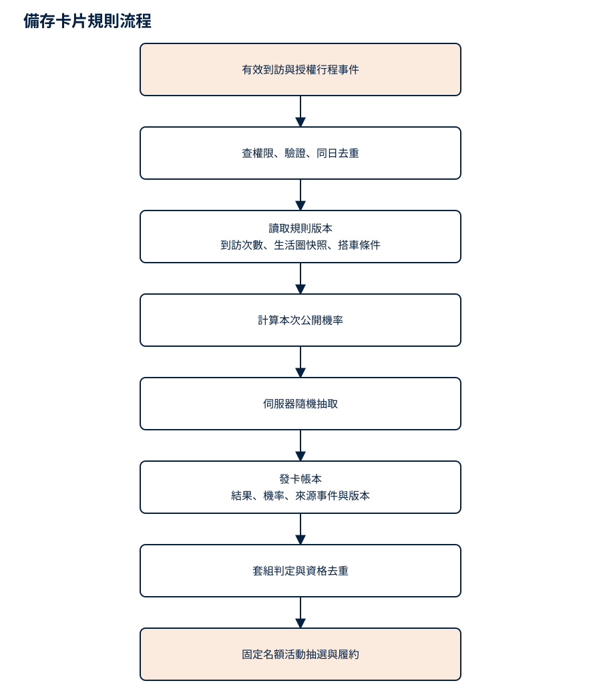
早期機率卡討論備存 · 點圖可另開分頁放大，正文保留條件與假設。 查看圖表文字與 Mermaid 原始碼 flowchart TD
A["有效到訪與授權行程事件"] --> V["查權限、驗證、同日去重"]
V --> P["讀取規則版本<br/>到訪次數、生活圈快照、搭車條件"]
P --> O["計算本次公開機率"]
O --> R["伺服器隨機抽取"]
R --> L["發卡帳本<br/>結果、機率、來源事件與版本"]
L --> S["套組判定與資格去重"]
S --> D["固定名額活動抽選與履約"]
發卡與資格核發在可回復的交易中處理。同一 visitId 重試只回原結果，手機不能重抽；伺服器使用合適的隨機來源並保存稽核紀錄，不將未來抽取狀態暴露給前端。分析記錄規則版本、當次機率、分組結果及延遲，監控重複核發與區域差異。
AI 只做卡面、文案、候選套組與推薦。它不決定某位使用者「快流失所以比較容易中」，也不因付費能力推論而修改機率；公開規則的可信度比短期刺激更重要。
9. 怎麼知道不是只熱鬧一週
建議逐步實驗，保留基本卡組作比較；不要一次加入所有機制，否則不知道效果來自哪裡。
可先規劃 4–8 週觀察（假設），但樣本數與檢定方式需依基準使用率及可偵測效果另定，不保證這個期間就足以證明留存。明確區分「打開看內容」「有效到訪」「付費行程」，三者不可互相代替。
每位參與者的增量貢獻，應以增量行程毛利與可確認的合作收入，扣除內容、AI、獎品及履約的增量成本。不能把車資全額當平台收益，也不能把所有探索後發生的叫車都歸因給卡片。
先讓使用者說得出「我今天打開它是想看什麼」，再判斷要不要增加抽卡與抽獎。若靠更高獎池才維持開啟，就應回頭改善地方內容與實用性。